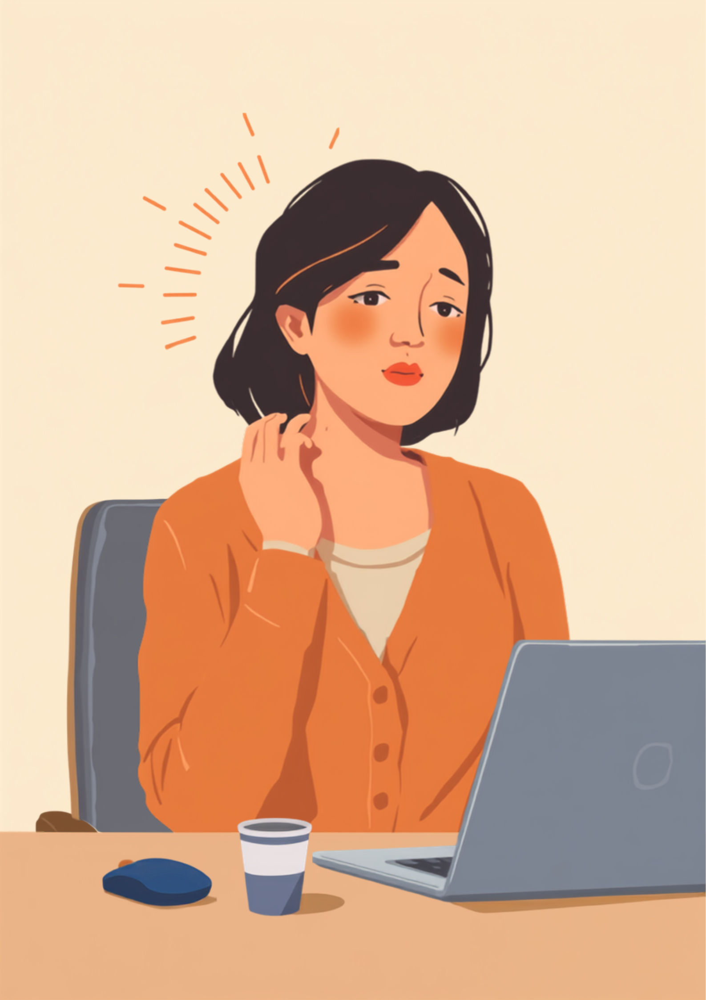

橋本病、そしてそれによって起こる甲状腺機能低下症は、強い倦怠感や意欲の低下、頭が働かない感覚などを引き起こすことがある病気です。血液検査をしなければ分からないため、周囲からは「最近やる気がないね」「怠けてるんじゃないの」と誤解されやすく、本人もどう説明すればいいか分からず苦しんでいることがあります。この記事では、橋本病・甲状腺機能低下症のある方が仕事の中で抱えやすいしんどさと、職場への伝え方、使える制度を当事者の声をもとに整理しました（2026年7月時点の情報です）。
PR



会議の資料を前にしても、頭が働かない感覚が続く
「やる気の問題」にされがちな、正体不明のだるさ

橋本病は、甲状腺に慢性的な炎症が起きる自己免疫の病気です。進行して甲状腺機能低下症になると、全身の代謝に関わるホルモンが不足し、体も頭も動きにくくなることがあります。ミミ
就労支援の現場で関わってきた中で、橋本病や甲状腺機能低下症のある方から繰り返し聞いてきた言葉があります。「最近ぼーっとしてるね、やる気なくなった?って言われるんです」というものです。血液検査をしなければ分からない病気なので、周囲は本人の体調の変化を「気分の問題」や「性格」だと受け取ってしまいやすいのだと思います。
本人にとっては、朝布団から出ること自体がひどく重く感じられたり、簡単な指示のはずなのに頭の中で言葉がうまく組み立てられなかったりする日があっても、それを説明する言葉が見つからないことが多いようです。結果として、「前より仕事が雑になった」「反応が鈍い」という周囲の印象と、本人が抱えている重だるさとの間に、大きなずれが生まれやすくなります。
!
倦怠感や意欲低下の感じ方、症状の程度には個人差があります。この記事で挙げる内容がそのまま当てはまるとは限らないため、体調に不安がある場合は自己判断せず内科や内分泌内科に相談することをお勧めします。
「正直言うと、診断される半年くらい前から『なんかおかしいな』とは思ってたんです。朝起きられない、会議中に頭が働かない、寒がりになった。でも全部『最近サボり気味だから』で片付けてました。上司にも『やる気あるの?』って真顔で聞かれたことがあって、あの時はほんとに何も言い返せなくて、トイレで少し泣きました。血液検査で数値が出た時、ああ気のせいじゃなかったんだって、変な安心感がありました。」
20代・女性（橋本病・IT企業事務職）
相談の一コマ
相談者
最近「やる気ないの?」ってよく言われるんです。自分でもそう見えてるんだろうなとは思うんですけど、本当に体が重くて、頭も回らなくて。

ミミ
甲状腺の機能が落ちていると、意欲の低下や思考の重さが症状として出ることがあるんです。気持ちの問題だけとは限らないんですよ。
相談者
そうなんですか…ずっと自分の性格の問題だと思って責めてました。
ミミ
まずは内科で血液検査を受けてみることをお勧めします。原因がわかれば、職場への伝え方も具体的に考えやすくなりますよ。
気合が足りないわけではなく、ホルモンが足りていない
甲状腺ホルモンは、全身の代謝を調整する「エンジンの回転数」のような役割を持つとされています。橋本病によってこのホルモンが不足すると、体温調節や心拍、脳の働きまで、あらゆる機能がゆっくりとしたペースに落ちてしまうことがあります。つまり「やる気が出ない」のではなく、「体を動かすための燃料そのものが足りていない」状態に近いといえます。
i
甲状腺機能が正常に保たれている橋本病の場合、意欲低下などの症状とは直接関係しないとされる場合もあります。気分の落ち込みが長く続くときは、甲状腺の検査とあわせて、他の要因も含めて医療機関に相談することが勧められています。
厄介なのは、同じ「橋本病による甲状腺機能低下症」という診断名がついていても、だるさが続いたときに人がたどる道筋が大きく分かれるという点です。「気のせいだろう」と自己判断して我慢を続けてしまう道と、早めに血液検査を受ける道とでは、その後の展開がまったく違ってくることがあります。
同じだるさでも、検査を受けるかどうかでその後の道筋が変わることがある
「私の場合、係長になった年にどんどん体が重くなって、部下への指示もワンテンポ遅れるようになりました。めちゃくちゃ焦って、これはうつなのかと思って心療内科に行こうとしたところ、たまたま健康診断で甲状腺の数値がおかしいと言われて。橋本病でした。薬を飲み始めて半年くらいはあまり実感がなかったんですが、1年経った今は当時より確実に楽になってます。ただ今でも季節の変わり目とかはどっと疲れが出る日があって、完全に元通りというわけでもないですね。」
50代・男性（橋本病・製造業係長）
職場への伝え方と、うつ病との違いへの向き合い方
橋本病・甲状腺機能低下症の症状は、倦怠感、気分の落ち込み、意欲低下、集中力の低下など、うつ病の症状と重なる部分が多いとされています。実際に心療内科を先に受診し、しばらくしてから甲状腺の病気だと分かる、というケースも珍しくないようです。どちらであっても本人がつらいことに変わりはありませんが、甲状腺機能低下症は血液検査で原因を特定しやすいという点が、治療の見通しを立てるうえでの手がかりになります。
具体的な場面に絞って伝えるという考え方
「甲状腺の病気で」とだけ伝えても、周囲はどう対応していいか分からないことが多いようです。業務に関わる具体的な場面だけに絞って伝える方法が、双方にとって負担が少ないとされています。
- 「午前中は特に体が重いので、重要な作業は午後にずらしたいです」
- 「急な予定変更や早口での説明は、頭の処理が追いつかないことがあります」
- 「反応が遅く見えるときも、内容は理解しているので少し待ってもらえると助かります」
- 「体調に波があるので、しんどい時期は事前に伝えるようにします」
ちなみに橋本病とは逆に、甲状腺の働きが強くなりすぎるバセドウ病では、イライラや落ち着きのなさが「性格がきつい」と誤解されることがあります。同じ甲状腺の病気でも、現れる症状は真逆になることがあるんです。ミミ
診断名を伝えるかどうかは本人が選べることです。まずは信頼できる上司や人事担当者に、業務に関わる範囲で共有し、体調の波があることだけでも知っておいてもらうと、急に調子を崩した日の対応がしやすくなるという声もあります。
使える制度と、一人で抱えないための相談先
治療と仕事の両立という考え方
橋本病・甲状腺機能低下症は、多くの場合ホルモン剤の内服治療によって数値が安定し、症状が改善していくとされています。ただし薬の量の調整には定期的な血液検査が必要で、数値が安定するまで時間がかかることもあります（2026年7月時点の情報です）。焦らず治療を続けながら、必要に応じて業務量の調整を相談していくことが大切だとされています。
相談できる窓口
- 内科・内分泌内科（血液検査や薬の調整、働き方についての相談）
- 職場に選任されている産業医（50人以上の事業場に選任義務あり）
- 自治体の保健センター、健康相談窓口
- 就労移行支援事業所（体調管理を含めた就労準備や職場との調整）
橋本病・甲状腺機能低下症の症状の現れ方や、治療による回復のペースには個人差があります。この記事の内容がそのまま当てはまるとは限らないため、実際の判断は主治医・支援者とよく相談しながら進めることをお勧めします（2026年7月時点の情報です）。
「やる気がない」と見える裏側に、ホルモンの不足という理由があることを知っているだけで、自分を責める気持ちは少し軽くなるかもしれません。
よくある質問
Q. 橋本病・甲状腺機能低下症でも障害者手帳は取れますか？
甲状腺機能低下症そのものは身体障害者手帳の対象になりにくいとされていますが、症状が重く日常生活に大きな制限がある場合は、内部障害の区分で手帳の対象になり得るケースもあります。判断は個々の状態によって異なるため、詳しくは主治医や自治体の障害福祉窓口にご確認ください（2026年7月時点の情報です）。
Q. だるさや意欲の低下をどう職場に伝えればいいですか？
病名や検査数値まで詳しく説明する必要はないとされています。「午前中は特に体が重いので、重要な作業は午後にずらしたい」など、業務に関わる具体的な場面に絞って伝える方法が助けになる場合があります。
Q. うつ病とはどう違うのですか？
倦怠感や意欲低下、気分の落ち込みなど、症状の現れ方がうつ病と似ている部分があるとされています。ただし橋本病・甲状腺機能低下症は血液検査で甲状腺ホルモンの数値を調べることで判別できる場合が多く、自己判断せず内科や内分泌内科で検査を受けることが勧められています。
Q. 薬を飲めば仕事のパフォーマンスはすぐ元に戻りますか？
治療によって症状が改善していくケースは多いとされていますが、ホルモンの数値が安定するまでには時間がかかることがあり、体調の波が残る期間もあるようです。焦らず主治医と相談しながら経過を見ていくことが大切だとされています。
Q. 通院と仕事の両立で気をつけることはありますか？
定期的な血液検査と薬の調整が必要になることが多いため、通院日をあらかじめ職場に共有し、業務量を調整してもらいながら両立している方もいます。産業医や人事担当者に早めに相談しておくと、体調の波があるときにも対応しやすくなる場合があります。
この5点を頭に置いておくだけで、少し気持ちが軽くなるかもしれません
PR


一人で抱え込む前に、今の気持ちを話してみませんか
「まだ迷っている」段階でも大丈夫です。mimemimeの無料相談は、今の状況の整理から一緒に始められます。
無料で話してみる
おのざる
mimemime代表。就労支援の現場経験をもとに、障がいのある方の働く不安に寄り添う記事を執筆。